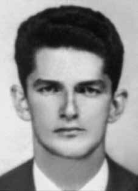

Jorge
Leal
Gonçalves
Pereira
CIRCUNSTÂNCIAS DA MORTE
Jorge Leal Gonçalves Pereira foi sequestrado na rua Conde de Bonfim, na Tijuca, Rio de Janeiro, no dia 20 de outubro de 1970, por agentes do DOI-CODI/RJ, onde foi acareado com o estudante Marco Antônio de Melo, com quem tinha marcado um encontro de rua. De acordo com Cecília Coimbra, enquanto esteve no DOI-CODI, do Rio de Janeiro, no mês de outubro de 1970, ouviu gritos e menções ao nome de Jorge Leal por agentes da repressão, na sala vizinha a do seu interrogatório. Ela também afirma ter visto Jorge Leal sair da sala de torturas altamente debilitado, o que lhe pareceu resultado de choques elétricos, devido às marcas presentes em seu corpo. Anos depois, Cecília Coimbra teve a certeza de que a pessoa que viu se tratava de Jorge, ao reconhecê-lo em uma foto. A passagem de Jorge Leal pelo DOI-CODI, do Rio de Janeiro, foi confirmada por Amílcar Lobo, médico que acompanhava as sessões de tortura. Em 1979, a sua morte foi mencionada pelo general Adyr Fiúza de Castro, em entrevista anônima à imprensai . O advogado de Jorge Leal conseguiu a suspensão da audiência de seu processo na 1ª Auditoria da Aeronáutica, no Rio de Janeiro, em 6 de dezembro de 1971, por conta de Jorge não ter sido apresentado ao tribunal. Outras pessoas acusadas no mesmo processo, que indiciava 63 presos políticos por pertencerem à AP (Ação Popular), informaram ao advogado que Jorge Leal encontrava-se preso. Apesar da suspensão da audiência, o Conselho de Justiça decidiu ouvir o depoimento de Marco Antônio de Melo, que confirmou a prisão de Jorge no DOI-CODI. O que não impediu o I Exército de enviar ofício à Auditoria da Aeronáutica, por meio do qual era negado tal fato. Rosa Leal Gonçalves Pereira, mãe de Jorge, em novembro de 1972 enviou uma carta à esposa do presidente Médici, Scyla Médici, na qual solicitou informações sobre o paradeiro de seu filho, cuja resposta jamais obteve. Pesquisas realizadas nos arquivos da Delegacia de Ordem Política e Social do Paraná (DOPS-PR) encontraram informes do Serviço Nacional de Informações (SNI) e boletins internos do Exército que fazem referência a 62 mil nomes. Entre os quais consta o de Jorge Leal com a identificação “falecido”. Até a presente data, Jorge Leal Gonçalves Pereira permanece desaparecido. Entretanto, no dia 2 de fevereiro de 1996, em decorrência da Lei nº 9.140/96, sua certidão de óbito foi registrada na 4ª Circunscrição do Registro Civil do Estado do Rio de Janeiro (RJ).
Jorge Leal Gonçalves Pereira was kidnapped on Rua Conde de Bonfim, in Tijuca, Rio de Janeiro, on October 20, 1970, by DOI-CODI/RJ agents, where he was confronted with the student Marco Antônio de Melo, with whom he had arranged a street meeting. According to Cecília Coimbra, while she was at DOI-CODI, in Rio de Janeiro, in October 1970, she heard shouts and mentions of Jorge Leal's name by repression agents, in the room next to her interrogation. She also claims to have seen Jorge Leal leave the torture room highly weakened, which seemed to her to be the result of electric shocks, due to the marks on his body. Years later, Cecília Coimbra was sure that the person she saw was Jorge, when she recognized him in a photo. Jorge Leal's stay at DOI-CODI, in Rio de Janeiro, was confirmed by Amílcar Lobo, a doctor who accompanied the torture sessions. In 1979, his death was mentioned by General Adyr Fiúza de Castro, in an anonymous interview with the press. Jorge Leal's lawyer managed to suspend the hearing of his case at the 1st Air Force Audit, in Rio de Janeiro, on December 6, 1971, because Jorge had not been presented to the court. Other people accused in the same case, which indicted 63 political prisoners for belonging to AP (Popular Action), informed the lawyer that Jorge Leal was in prison. Despite the suspension of the hearing, the Justice Council decided to hear the testimony of Marco Antônio de Melo, who confirmed Jorge's arrest at DOI-CODI. This did not prevent the 1st Army from sending a letter to the Air Force Audit, through which this fact was denied. Rosa Leal Gonçalves Pereira, Jorge's mother, in November 1972 sent a letter to President Médici's wife, Scyla Médici, in which she requested information about her son's whereabouts, which she never received a response to. Research carried out in the archives of the Paraná Political and Social Order Police Station (DOPS-PR) found reports from the National Information Service (SNI) and internal Army bulletins that reference 62,000 names. Among which is Jorge Leal with the identification “deceased”. To date, Jorge Leal Gonçalves Pereira remains missing. However, on February 2, 1996, as a result of Law No. 9,140/96, his death certificate was registered in the 4th Circumscription of the Civil Registry of the State of Rio de Janeiro (RJ).
Jorge Leal Gonçalves Pereira fue secuestrado en la Rua Conde de Bonfim, en Tijuca, Río de Janeiro, el 20 de octubre de 1970, por agentes del DOI-CODI/RJ, donde fue confrontado con el estudiante Marco Antônio de Melo, con quien había concertado una reunión callejera. Según Cecília Coimbra, mientras se encontraba en el DOI-CODI, en Río de Janeiro, en octubre de 1970, escuchó gritos y menciones del nombre de Jorge Leal por parte de agentes de la represión, en la sala contigua a su interrogatorio. También afirma haber visto a Jorge Leal salir de la sala de torturas muy debilitado, lo que le pareció producto de descargas eléctricas, debido a las marcas que tenía en el cuerpo. Años más tarde, Cecília Coimbra estuvo segura de que la persona que vio era Jorge, cuando lo reconoció en una foto. La estancia de Jorge Leal en el DOI-CODI, en Río de Janeiro, fue confirmada por Amílcar Lobo, médico que acompañó las sesiones de tortura. En 1979, su muerte fue mencionada por el general Adyr Fiúza de Castro, en una entrevista anónima con la prensa. El abogado de Jorge Leal logró suspender la audiencia de su caso en la Primera Auditoría de la Fuerza Aérea, en Río de Janeiro, el 6 de diciembre de 1971, porque Jorge no había sido presentado ante el tribunal. Otros imputados en el mismo caso, que imputó a 63 presos políticos por pertenecer a AP (Acción Popular), informaron al abogado que Jorge Leal se encontraba preso. A pesar de la suspensión de la audiencia, el Consejo de Justicia decidió escuchar el testimonio de Marco Antônio de Melo, quien confirmó la detención de Jorge en el DOI-CODI. Esto no impidió que el 1.º Ejército enviara una carta a la Auditoría de la Fuerza Aérea, mediante la cual se desmintió este hecho. Rosa Leal Gonçalves Pereira, madre de Jorge, envió en noviembre de 1972 una carta a la esposa del presidente Médici, Scyla Médici, en la que solicitaba información sobre el paradero de su hijo, de la que nunca recibió respuesta. Una investigación realizada en los archivos de la Comisaría de Orden Político y Social de Paraná (DOPS-PR) encontró informes del Servicio Nacional de Información (SNI) y boletines internos del Ejército que referencian 62.000 nombres. Entre los cuales se encuentra Jorge Leal con la identificación “fallecido”. A la fecha, Jorge Leal Gonçalves Pereira continúa desaparecido. Sin embargo, el 2 de febrero de 1996, como resultado de la Ley nº 9.140/96, su certificado de defunción fue inscrito en la 4ª Circunscripción del Registro Civil del Estado de Río de Janeiro (RJ).